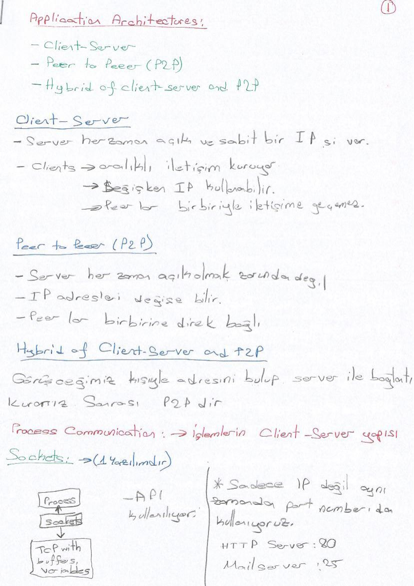
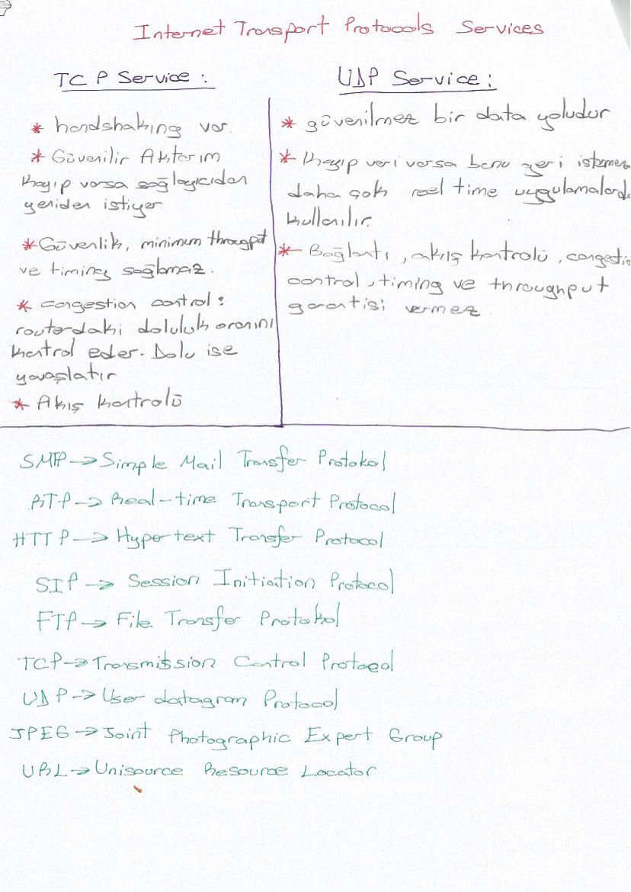
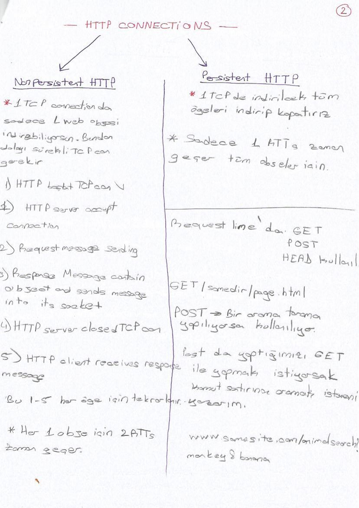
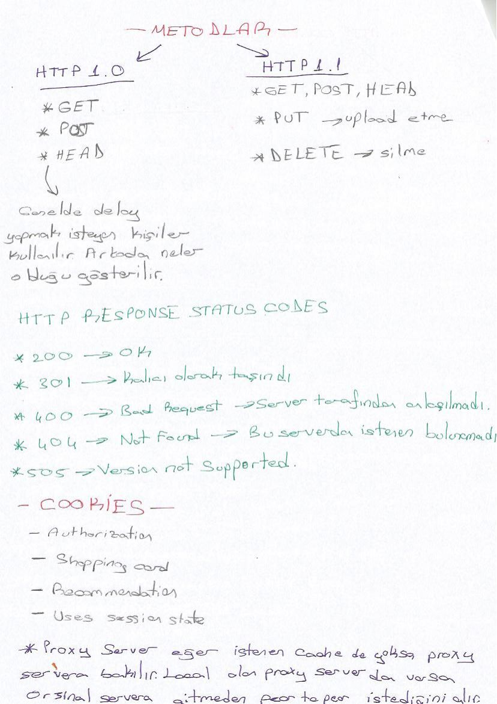
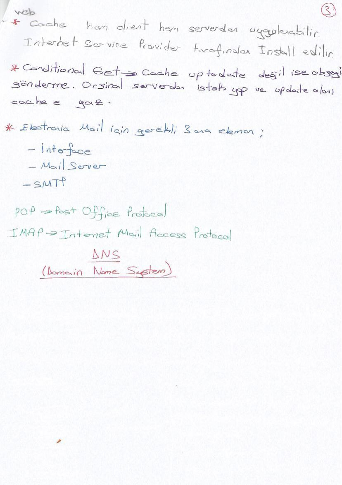

· EEM413
EEM413 Bilgisayar Ağları: Bölüm 2: Uygulama Katmanı ve HTTP
EEM413 – Bilgisayar Ağları · 02.11.2015 · 18.10.2026
Uygulama mimarileri
İstemci–sunucu ve P2P mimarileri; süreçler arası haberleşme; IP adresi ve port; soketin uygulama ile taşıma katmanı arasındaki arayüz olması açıklanır.

Uygulamanın taşıma gereksinimleri
Veri bütünlüğü, zamanlama, throughput ve güvenlik gereksinimleri ayrı ele alınır. Dosya aktarımı kayba duyarlı, gerçek zamanlı ses gecikmeye duyarlıdır.

TCP ve UDP servisleri
TCP bağlantı odaklı, güvenilir ve akış/tıkanıklık kontrollüdür. UDP bağlantısızdır. İkisinin de tek başına asgari aktarım hızı veya kesin gecikme garantisi yoktur.

HTTP bağlantıları
HTTP istek ve cevap mesajlarıyla çalışır. Kalıcı olmayan bağlantıda nesne başına bağlantı kurulumu yapılır. Basit hesapta yanıt süresi 2 RTT + nesne iletim süresidir; kalıcı bağlantı tekrar kurulumu azaltır.

HTTP mesajları ve durum kodları
İstek satırı yöntem, yol ve sürümü içerir. Host, User-Agent, Connection ve Accept-Language başlıkları örneklenir. Yanıt durum kodu ve açıklaması taşır; 200 başarı, 301 yönlendirme, 400 hatalı istek ve 404 bulunamayan kaynak örnekleridir.
